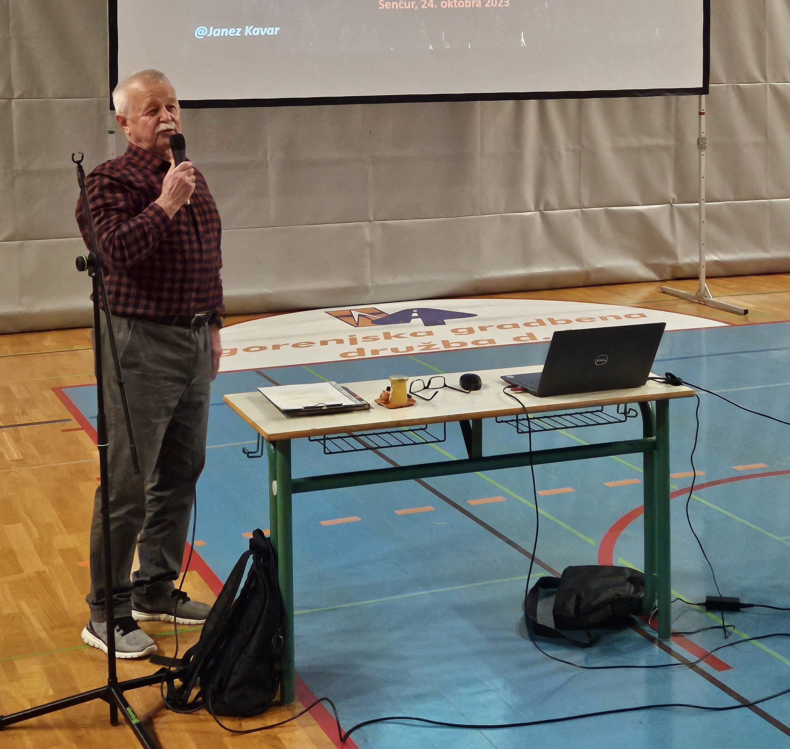

Razstava o Rudolfu Maistru in bojih za severno mejo na OŠ Šenčur od 17. do 27. oktobra 2023
Tekst: Roman Nahtigal
Od 17. do 27. oktobra 2023 je DGRM Kranj na Osnovni šoli Šenčur postavilo razstavo Zveze društev general Maister o življenju in delu generala Rudolfa Maistra ter bojih za severno mejo.
Učenci, učitelji in priložnostni obiskovalci, zadnji dan pa tudi starši devetošolcev, so se na razstavi lahko seznanili z življenjem in delom generala Rudolfa Maistra ter z njegovo vlogo v bojih za severno mejo in pri nastajanju slovenske države.
 Razstavo so si ogledali poleg devetošolcev tudi učenci nižjih razredov v prvem nadstropju šole. (foto: Boštjan Gradišar)
Razstavo so si ogledali poleg devetošolcev tudi učenci nižjih razredov v prvem nadstropju šole. (foto: Boštjan Gradišar)
Pri predmetu zgodovina je o vsebini razstave za devetošolce učitelj zgodovine Boštjan Gradišar izdelal učne liste, ki so jih morali učenci rešiti in dopolniti z odgovori. Štiri učence, ki so dosegli najboljši rezultat, je DGRM Kranj nagradilo s knjigo »Stražarji Karavank« in z Maistrovo značko ZDGM.
Vsem devetošolcem in enemu osmemu razredu (okoli 80) je o bojih za severno mejo na Gorenjskem eno šolsko uro 24. oktobra v šenčurski telovadnici predaval tudi upokojeni brigadir SV Janeza Kavar, član DGRM Kranj, veteran vojne za Slovenijo in dober poznavalec slovenske vojaške zgodovine.
S prosojnicami jim je predstavil obdobje po prvi svetovni vojni, ko je nastala nova Država SHS in ko je bilo potrebno določiti tudi mejo z Avstrijo, predvsem pa boje za severno mejo na Karavankah.
 Predavanje devetošolcem in enemu osmemu razredu je bilo v prostorni šenčurski telovadnici. (foto: Roman Nahtigal)
Predavanje devetošolcem in enemu osmemu razredu je bilo v prostorni šenčurski telovadnici. (foto: Roman Nahtigal)
 Obdobje po prvi svetovni vojni, ko je nastala nova Država SHS in ko je bilo potrebno določiti tudi mejo z Avstrijo, predvsem pa boje za severno mejo na Karavankah, je učencem na prosojnicah predstavil upokojeni brigadir SV Janez Kavar. (foto: Roman Nahtigal)